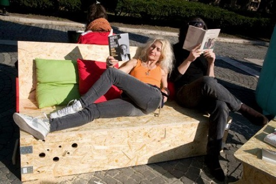
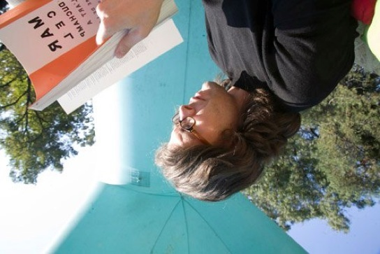
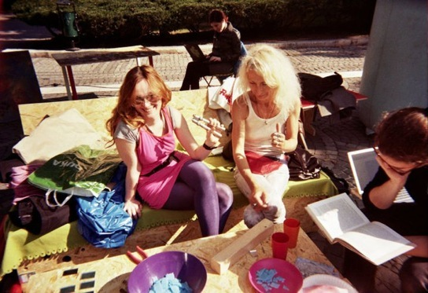

DUCHAMP MINI LIBRARY PROJECT
Parcul Karol, Bucarest
2009
w ramach The Knot Mobile Unit
>>>> (tekst poniżej)



DUCHAMP MINI LIBRARY PROJECT
Parcul Karol, Bucarest
2009
w ramach The Knot Mobile Unit
>>>> (tekst poniżej)
copyright for the website: Jan Lubicz Przyluski - All Rights Reserved

The Bride, 2010, Parcul Carol, Bucarest (The Knot Project)


Jan Lubicz Przyluski, Reading Duchamp, 2010, Parcul Carol, Bucarest (The Knot Project)
Natalia Romik, Pola Dwurnik, Katarzyna Jaśkiewicz, Jan Przyłuski, Czytanie, 2010, Parcul Carol, Bucarest (The Knot Project)

"The only way to make music is to study Duchamp" - said Cage. We will
follow neodada and fluxus and we will examine the results.